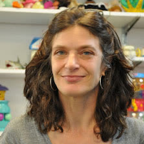

PLAY & Learning Across a Year
Principal Investigators
|
 |
Karen E. Adolph, Ph.D. New York University Principal Investigator |
|
|
Catherine Tamis-LeMonda, Ph.D. New York University Co-Principal Investigator |
|
|
Rick O. Gilmore, Ph.D. The Pennsylvania State University Co-Principal Investigator |
 Orit Herzberg, D.P.T. Research Scientist
Orit Herzberg, D.P.T. Research Scientist  Tiger Teng, B.A. Research Associate
Tiger Teng, B.A. Research Associate Collaborating Investigators
| Full name | Institution | Location | Role |
|---|---|---|---|
| Karen Adolph | New York University | New York, NY | Collecting & Coding |
| Dima Amso | Brown University | Providence, RI | Contributor |
| Rachel Barr | Georgetown University | Washington, DC | Collecting & Coding |
| Sheri Berenbaum | Penn State University | State College, PA | Contributor |
| Marc Bornstein | NICHD | Rockville, MD | Contributor |
| Jean-Paul Boudreau | Mount Allison University | Sackville, NB | Coding |
| Bob Bradley | Arizona State University | Tempe, AZ | Contributor |
| Amanda Brandone | Lehigh University | Lehigh, PA | Coding |
| Rebecca Brooker | Texas A&M | College Station, TX | Coding |
| Kristin Buss | Penn State University | State College, PA | Coding |
| Marianella Casasola | Cornell University | Ithaca, NY | Collecting & Coding |
| Guangqing Chi | Penn State University | State College, PA | Contributor |
| Laura Claxton | Purdue University | W. Lafayette, IN | Collecting & Coding |
| Elizabeth Davis | University of California at Riverside | Riverside, CA | Coding |
| Kaya de Barbaro | University of Texas at Austin | Austin, TX | Coding |
| Stacey Dusing | University of Southern California | Los Angeles, CA | Collecting & Coding |
| Gary Evans | Cornell University | Ithaca, NY | Contributor |
| Caitlin Fausey | University of Oregon | Eugene, OR | Collecting & Coding |
| John Franchak | University of California at Riverside | Riverside, CA | Collecting & Coding |
| Mike Frank | Stanford University | Palo Alto, CA | Collecting & Coding |
| Janet Frick | University of Georgia | Athens, GA | Collecting & Coding |
| Simone Gill | Boston University | Boston, MA | Collecting & Coding |
| Rick Gilmore | Penn State University | State College, PA | Collecting & Coding |
| Susan Goldin-Meadow | University of Chicago | Chicago, IL | Contributor |
| Julie Gros-Louis | University of Iowa | Iowa City, IA | Collecting |
| Jeff Haddad | Purdue University | W. Lafayette, IN | Coding |
| May Ling Halim | California State University at Long Beach | Long Beach, CA | Collecting |
| Amie Hane | Williams College | Williamstown, MA | Coding |
| Janet Hauck | Michigan State University | East Lansing, MI | Coding |
| Jill Heathcock | Ohio State University | Columbus, OH | Collecting & Coding |
| Heather Henderson | University of Waterloo | Waterloo, ON | Coding |
| Kathy Hirsh-Pasek | Temple University | Philadelphia, PA | Contributor |
| Jana Iverson | University of Pittsburgh | Pittsburgh, PA | Collecting & Coding |
| Audrey Kane | Virginia Commonwealth University | Richmond, VA | Collecting & Coding |
| Lana Karasik | CUNY – College of Staten Island | Staten Island, NY | Collecting & Coding |
| Do Kyeong Lee | California State University at Fullerton | Fullerton, CA | Collecting & Coding |
| Mei-Hua Lee | Michigan State University | East Lansing, MI | Collecting & Coding |
| Cristine Legare | University of Texas at Austin | Austin, TX | Collecting & Coding |
| Casey Lew-Williams | Princeton University | Princeton, NJ | Collecting & Coding |
| Klaus Libertus | University of Pittsburgh | Pittsburgh, PA | Coding |
| Vanessa LoBue | Rutgers University | Newark, NY | Collecting & Coding |
| Jeff Lockman | Tulane University | New Orleans, LA | Collecting & Coding |
| Brian MacWhinney | Carnegie Mellon University | Pittsburgh, PA | Contributor |
| Virginia Marchman | Stanford University | Palo Alto, CA | Contributor |
| Dan Messinger | University of Miami | Miami, FL | Collecting & Coding |
| Letitia Naigles | University of Connecticut | Storrs, CT | Coding |
| Laura Namy | Society for Research in Child Development | Washington, DC | Contributor |
| Amy Needham | Vanderbilt University | Nashville, TN | Collecting & Coding |
| Nora Newcombe | Temple University | Philadelphia, PA | Contributor |
| Lisa Oakes | University of California at Davis | Davis, CA | Collecting & Coding |
| Kristina Olson | University of Washington | Seattle, WA | Contributor |
| Koraly Perez-Edgar | Penn State University | State College, PA | Coding |
| Lynn Perry | University of Miami | Miami, FL | Collecting & Coding |
| Eva Pomerantz | University of Illinois at Urbana-Champaign | Champaign, IL | Contributor |
| Laura Prosser | Children’s Hospital of Philadelphia | Philadelphia, PA | Collecting & Coding |
| Meredith Rowe | Harvard University | Cambridge, MA | Coding |
| Mark Schmuckler | University of Toronto Scarborough | Toronto, ON | Coding |
| Adam Sheya | University of Connecticut | Storrs, CT | Collecting & Coding |
| Melanie Soderstrom | University of Manitoba | Winnipeg, MB | Contributor |
| Lulu Song | Brooklyn College | Brooklyn, NY | Coding |
| Catherine Tamis-LeMonda | New York University | New York, NY | Coding |
| Peter Vishton | College of William & Mary | Williamsburg, VA | Contributor |
| Eric Walle | University of California at Merced | Merced, CA | Collecting & Coding |
| Su-hua Wang | University of California at Santa Cruz | Santa Cruz, CA | Collecting & Coding |
| Anne Warlaumont | University of California at Los Angeles | Los Angeles, CA | Coding |
| Hanako Yoshida | University of Houston | Houston, TX | Collecting & Coding |
| Chen Yu | University of Texas at Austin | Austin, TX | Collecting & Coding |
| Dan Yurovsky | Carnegie Mellon University | Pittsburgh, PA | Coding |
Advisory Board
|
Internal advisors
|
External advisors
|
Except where otherwise noted, content on this site is licensed under a Creative Commons Attribution 4.0 International (CC BY 4.0) license.